Introduction
In Lab 7, our objective is to deploy a Kalman Filter, a powerful tool that promises to enhance the execution of behaviors previously explored in Lab 5. Our aim now is to leverage the Kalman Filter to augment the utilization of our slowly sampled Time-of-Flight (ToF) values. By integrating this advanced filtering technique, we endeavor to accelerate our approach towards the wall with precision, optimizing our ability to halt precisely 1ft away from the obstacle or execute a swift turn within a 2ft radius. This strategic enhancement not only facilitates faster navigation but also ensures heightened accuracy and efficiency in achieving our desired robotic behaviors.
Parts required
- 1 x Fully assembled robot, with Artemis, ToF sensor, and an IMU.
Kalman Filter
Background
The Kalman filter is a powerful algorithm used in signal processing and control systems to estimate the state of a dynamic system from a series of incomplete and noisy measurements. Developed by Rudolf E. Kálmán in the 1960s, it is widely applied in fields such as navigation, robotics, and finance. The Kalman filter operates recursively, continuously updating its state estimates as new measurements become available, which makes it efficient for real-time data processing. The algorithm consists of two main steps: prediction and update. During the prediction step, it uses a model of the system's dynamics to forecast the next state, incorporating known control inputs. In the update step, it refines this prediction using the latest measurement, combining the predicted state and the actual observation to produce a more accurate estimate. The Kalman filter maintains an error covariance matrix that quantifies the uncertainty of the state estimate, updating this matrix at each step to weigh the reliability of predictions and measurements appropriately. This mathematical formulation allows the Kalman filter to provide optimal estimates for linear systems with Gaussian noise, and it can be extended to nonlinear systems through variations like the Extended Kalman Filter (EKF) and Unscented Kalman Filter (UKF). Its applications are diverse, including navigation and GPS for vehicle and aircraft position tracking, robotics for localization and sensor fusion, finance for noise reduction and trend prediction, and signal processing for enhancing signal clarity. The Kalman filter's ability to handle uncertainty and noise effectively makes it a fundamental tool in modern engineering and science.
Implementation
Estimate Drag and Mass

After receiving the data sent from the Artemis microcontroller via the Bluetooth Low Energy (BLE) channel, we can extract and process the values of time, distance, and pulse width modulation (PWM). The following code snippet demonstrates how to truncate and analyze a specific fraction of the data array for further analysis:
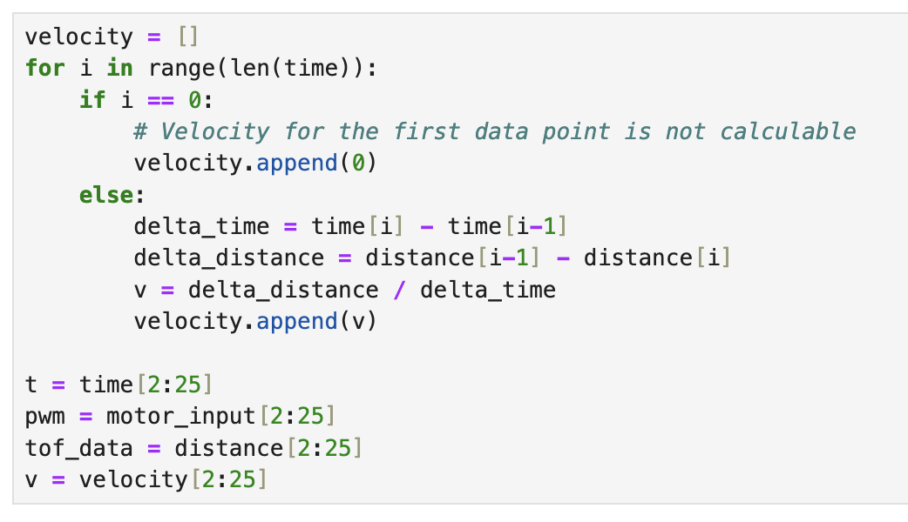Using the code above, we can plot the value of distance, motor speed and velocity versus time.
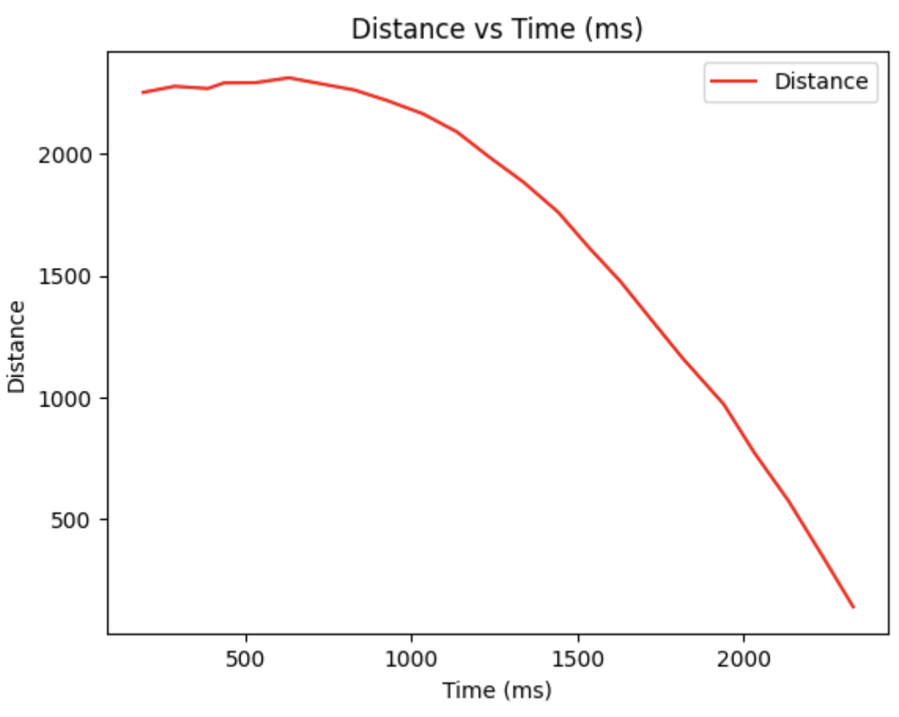 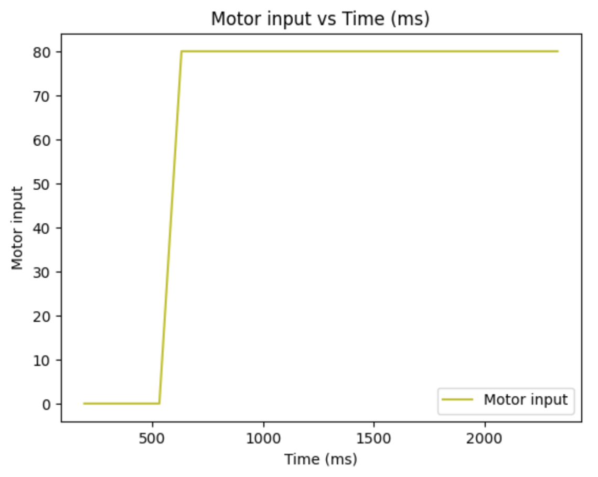 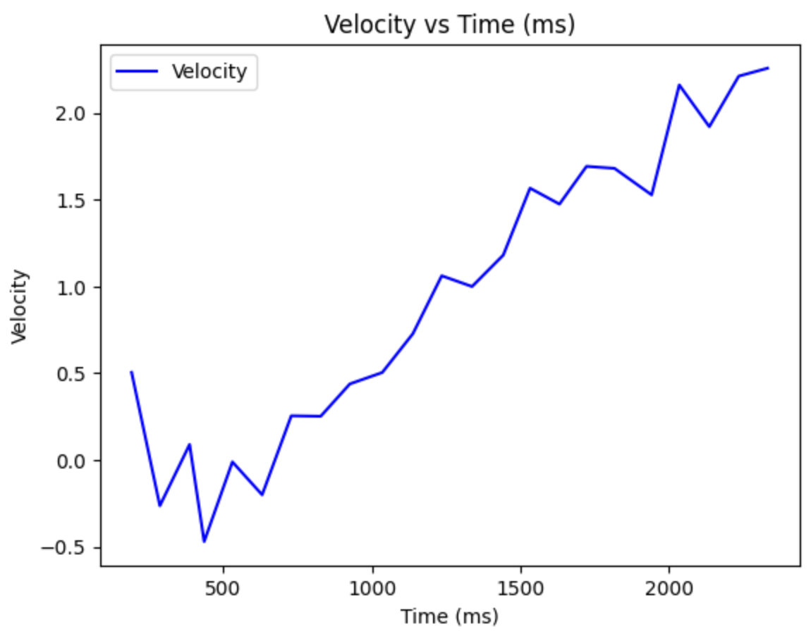Based on the distance readings and their corresponding timestamps, I determined the steady-state speed to be approximately 3000 mm/s. Additionally, the 90% rise time was calculated to be around 0.50 seconds, with the speed at this rise time reaching 2.17 m/s.
Using this value and the formula force and drag, we can determine the drag and mass of the system:
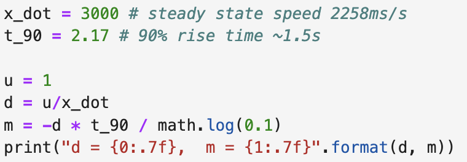 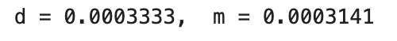Initialize Kalman Filter
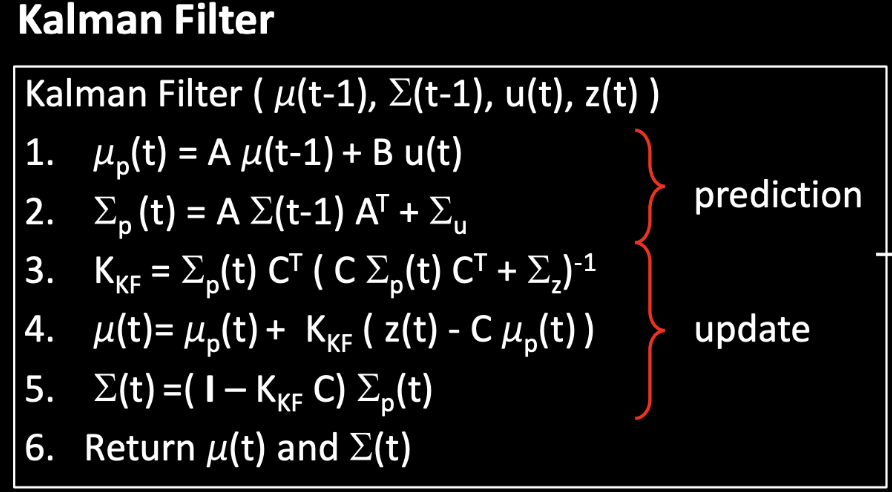The equations for the Kalman Filter are depicted in the lecture slides, and several key parameters need to be identified to set up the filter effectively. These include the matrices A, B and C for constructing the state space equation, as well as the noise matrices Sigma U and Sigma Z.
- Matrix A: This is the state transition matrix, which models how the system transitions from one state to another.
- Matrix B: This is the control input matrix, which models the influence of control inputs on the state.
- Matrix C: This is the observation matrix, which models how the state is mapped to the observed measurements.
- Noise Matrix Sigma u: This represents the process noise covariance, capturing the uncertainty in the system dynamics.
- Noise Matrix Sigma z: This represents the measurement noise covariance, capturing the uncertainty in the observations.
Using these parameters, the Kalman Filter can be systematically implemented to optimally estimate the state of the system based on the noisy measurements and model predictions. This setup enables more accurate and reliable state estimation, improving the system's overall performance in dynamic environments.
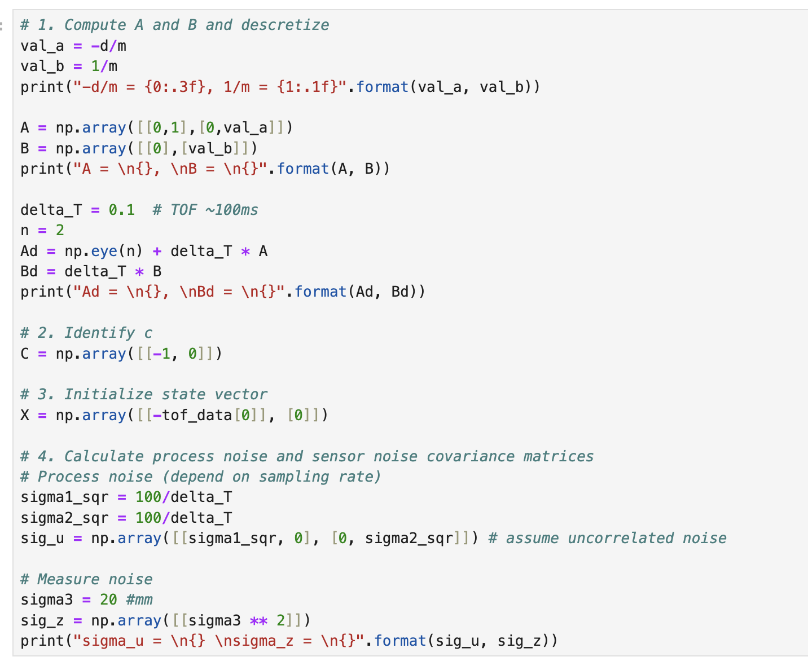Implement Kalman Filter in python
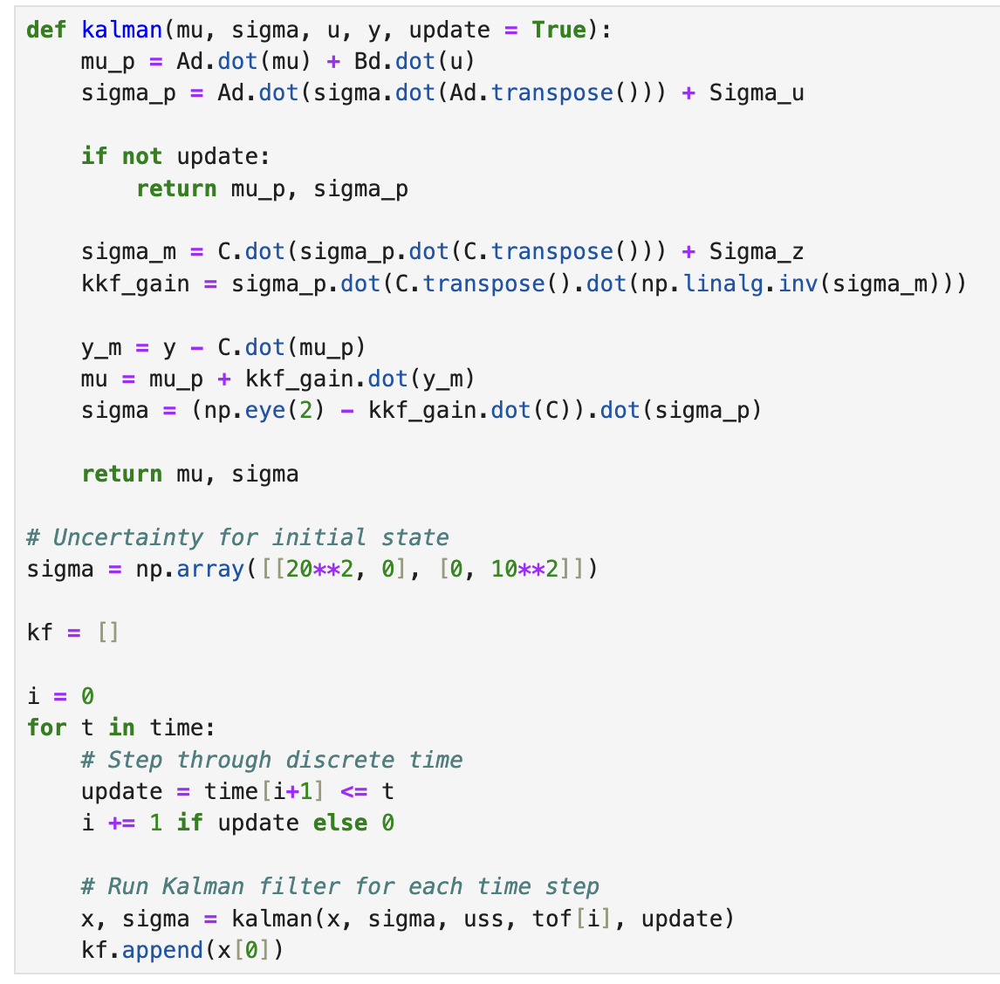The figures below are all result I get.
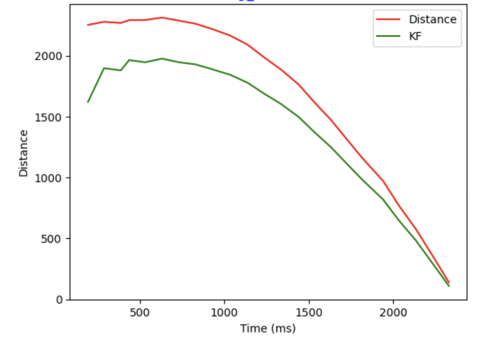 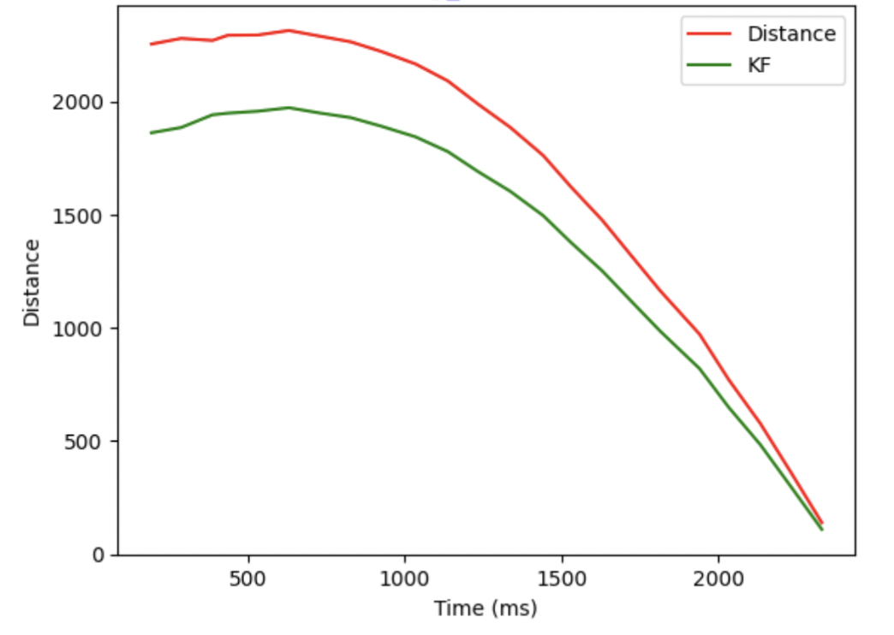 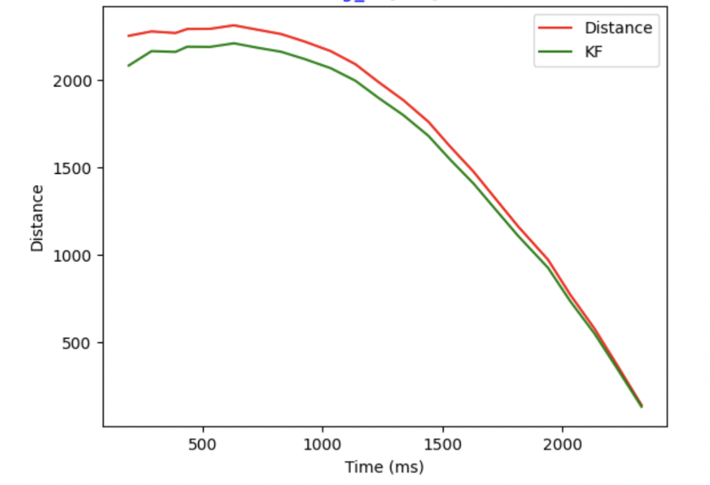 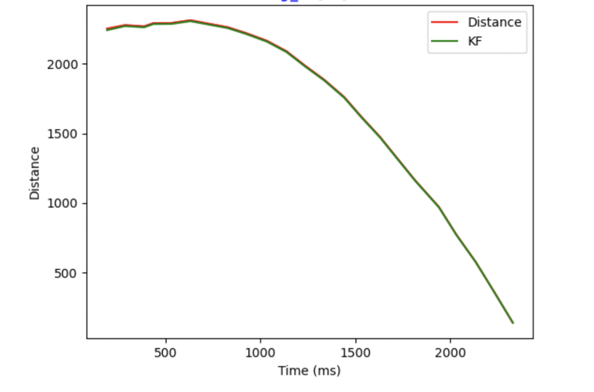Kalman Filter with faster frequency
I have also modified the sampling rate to enable the Kalman Filter to operate at a higher frequency. Consequently, with delta T equals 20 ms, the prediction step is used to estimate the state of the car between readings. This prediction step is analogous to the linear extrapolation step from Lab 6, but it is implemented using the Kalman Filter's prediction mechanism instead, providing a more refined and accurate state estimation.
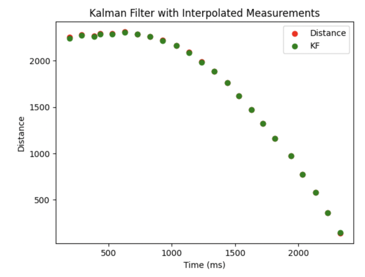 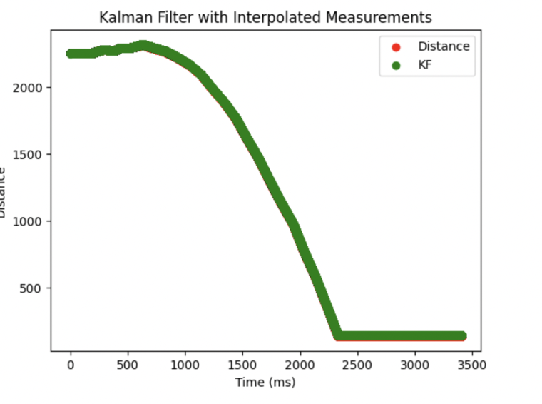Implementation on Robot
By implementing the model described above in the robot, we can achieve a faster controller. If the Time-of-Flight (ToF) sensor data is not available, I set the d_tof variable to -100, indicating its unavailability. In this case, the Kalman Filter will perform the prediction step only, allowing us to still estimate the distance and generate a motor input value. When the sensor data becomes available, both the prediction and update steps of the Kalman Filter will be executed. Here is the Kalman Filter function in Arduino. I encountered an overflow issue when using the Invert() function for the matrix calculation C*sigma_p*~C+sig_z. To resolve this, I chose to take the reciprocal first, since it was a 1x1 matrix, and then convert it back to a matrix:
void kalmanfilter() { // previous state state(0)=-1*datas_tof[index_tof-1].d_kf;//x=-d state(1)=datas_tof[index_tof-1].v_kf;//v int u_prev;//control Matrix<1,1> u={datas_tof[index_tof-1].motor_input/SPEED_BASE};//normalize Matrix<1,1> Y={datas_tof[index_tof].d_tof};//current measurement //prediction Matrix<2,1> mu_p; Matrix<2,2> sigma_p; mu_p=Ad*state+Bd*u; sigma_p=Ad*sigma*~Ad + sig_u; if(Y(0)>0){//tof distance avaiable, update Matrix<2,1> kf_gain; Matrix<1,1> S,S_inv; S=C*sigma_p*~C+sig_z; S_inv(0)=1/S(0); kf_gain=sigma_p*~C*S_inv; state=mu_p+kf_gain*(Y-C*mu_p); sigma=(I-kf_gain*C)*sigma_p; } else{// no measurement, no update state=mu_p; sigma=sigma_p; } // record datas datas_tof[index_tof].d_kf=state(0)*-1; datas_tof[index_tof].v_kf=state(1); }
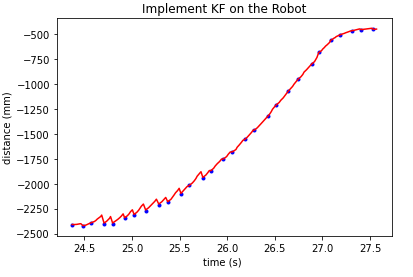
Conclusion
This lab aims to understand the performance of the Kalman Filter and assess its effectiveness, which is crucial for improving navigation and predicting recorded data. By implementing the Kalman Filter in a real-world robotic system, we can evaluate how well it integrates noisy sensor data to provide accurate state estimations. This process not only enhances the robot's navigation capabilities by offering more precise distance and position estimates but also improves its ability to predict future states based on past and current observations. The insights gained from this lab will demonstrate the practical benefits of the Kalman Filter in dynamic environments, showcasing its utility in tasks that require reliable data integration and real-time decision-making.